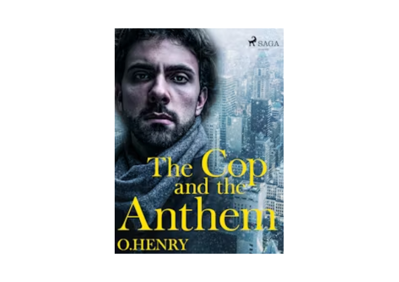

American writer O. Henry penned a short story titled "The Cop and the Anthem" in December of 1904. It has many of the traditional components of an O. Henry tale, such as a New York City setting, an understanding examination of the mental state of a person from a lower socioeconomic class, and an ironic ending.